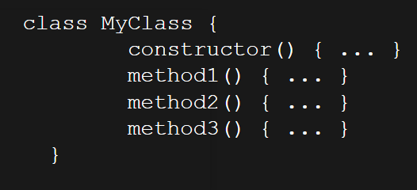

The problem of JS classes
At first, what is class in general?
Class describes a certain form of code organization -- a way of modeling real world problem domains in code.
The traditional metaphor for “class” comes from building construction.
An architect plans out all the characteristics of a building: how wide, how tall, how many windows and so on. The architectural blueprints are only plans for a building. They are not an actual building where we can walk in and sit down. We need a builder for that task. A builder will take those plans and follow them, exactly, as he builds the building. He is copying the intended characteristics from the plans to the physical building. Once complete, the building is a physical instantiation of the blueprint plans.
The same thing goes for classes. Class is a blueprint, instance of a class – is a physical building.
Classes in JS
In JS a class is a kind of function.
The basic syntaxis of class is
When we initialize a class using operator "new" this happens:
- A new object is created.
- The constructor runs with the given arguments.
- Class stores class methods, in its prototype.
Inheritance
You can define another class that inherits from the first class. For example, when a parent has a biological child, the genetic characteristics of the parent are copied into the child.
Traditional classes mean copies
Once the child exists, he is separate from the parent. The child was heavily influenced by his parent, but is unique. If a parent ends up with red hair, that doesn’t mean the child’s hair automatically becomes red. And vice versa.
JS is another thing tho
In JS we have "extends" keyword to create a child
Here's an example
Object of Rabbit class have access to Rabbit methods, such as rabbit.hide(), and also to Animal methods, such as rabbit.run().
Internally, extends keyword works using prototype mechanics. It sets Rabbit.prototype.[[Prototype]] to Animal.prototype. So, if a method is not found in Rabbit.prototype, JavaScript takes it from Animal.prototype.
And here's a problem
Prototype mechanism is dynamic. But, as we mentioned earlier, classes mechanism must be static.
In JS if we change a parent's methods, child's methods will be changed
And this is a bad thing
But first, let's cover some good stuff.
Is it a syntactic sugar?

Maybe.
It has some features:
- Classes cannot be called without new.
- Classes use strict.
- Class methods are non-enumerable.
- There’s no more references to .prototype making the code difficult to read.
- We can use “extends” instead of needing Object.create(..) or having to set with .__proto__ or Object.setPrototypeOf(..).
- Extends lets you extend even built-in object types, like Array, in a very natural way. Doing so without classes has been a frustrating task.
- It looks prettier.
But is this sugar really sweet?
Actually class does good job of pretending to fix the problems with the inheritance in JS. It does the opposite: it hides many of the problems.
Class looks like a difficult add-on to a relatively simple prototype mechanic of JS.
In traditional class-oriented languages, you never adjust the definition of a class later, so the class design pattern doesn’t suggest such capabilities.
But one of the most powerful parts of JS is that it is dynamic, and the definition of any object is a fluid and mutable thing.
Class seems to imply you shouldn’t use all these dynamic things, you should use static-looking syntax, which is not even static.
So the ES6 class makes it harder to reliably use [[Prototype]], and hides the most important nature of the JS object mechanism — the live delegation links between objects.
The ES6 class is masquerading as a nice solution to syntactic troubles, but it’s actually making things worse for JS and for clear understanding.